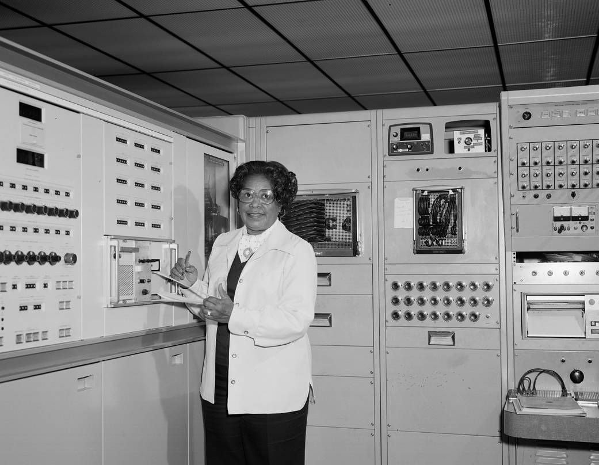
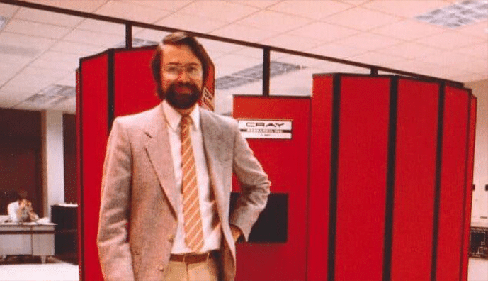
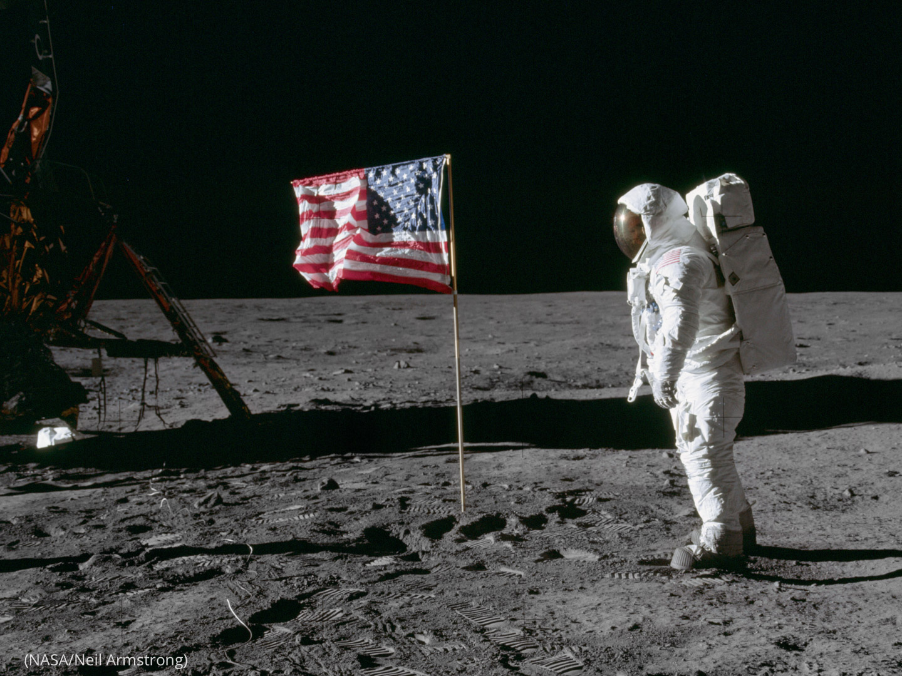
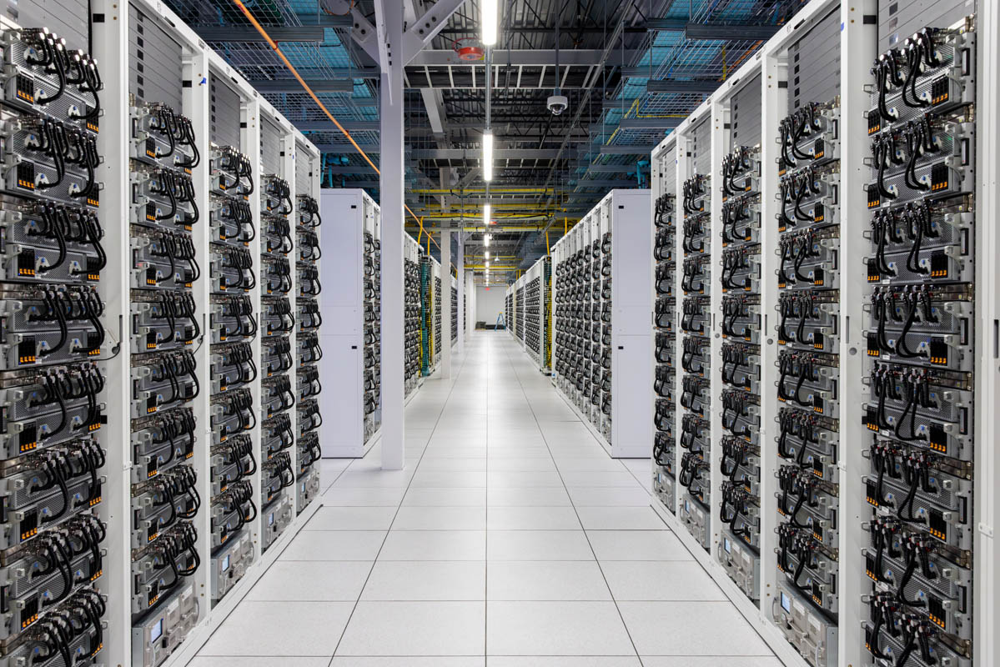
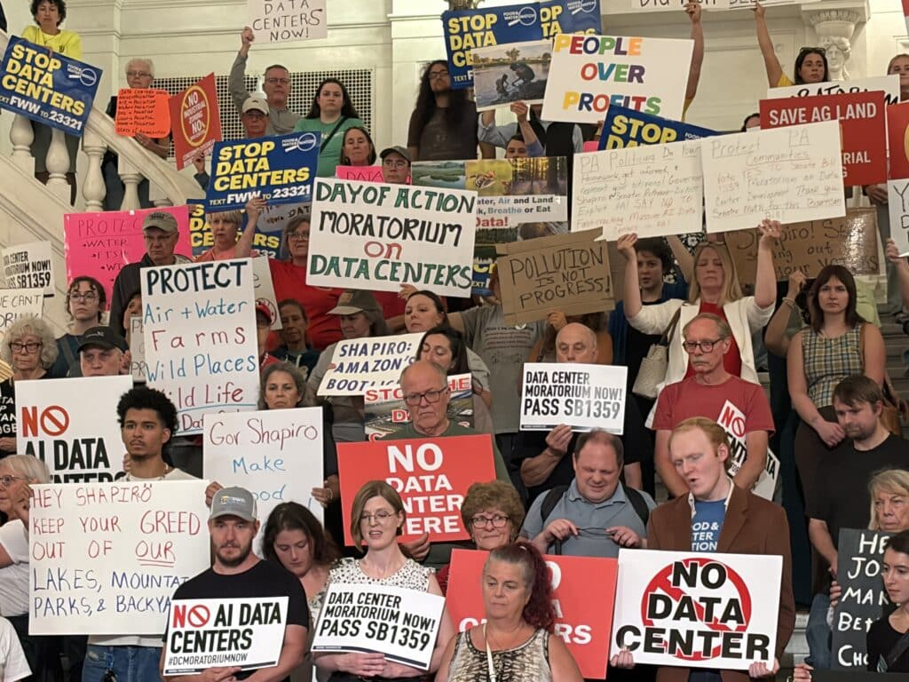

Backstory
From Apollo to AI
US data center electricity use (National estimates of data center electricity begin in 2000)
Seven decades of data centers
1950s–1960s
Data centers emerged in the 1950s and were initially concentrated within government agencies, universities, and large corporations. These facilities enabled extraordinary technological milestones.
In the early 1960s, NASA used the IBM 7090 to send a man into orbit around Earth, leading to the first American orbital spaceflight.
By 1969 an IBM System/360 Model 75 mainframe was used at NASA's Real Time Computer Complex to help guide the astronauts to the Moon.

1970s–1980s
Data centers expanded alongside the rise of mainframes and supercomputers, powering scientific research, weather forecasting, defense systems, and early digital business operations.

1990s
The growth of the internet transformed data centers into the backbone of global communications and e-commerce, supporting emerging platforms and online services.
2000s
Hyperscale computing arrived as companies such as Google, Amazon, and Microsoft built massive facilities capable of serving millions of users worldwide. Cloud computing, led by the 2006 launch of Amazon Web Services, shifted data centers from dedicated infrastructure to infrastructure as a service (IAAS), increasing accessibility at scale.
2012
The resurgence of deep learning and advances in GPU computing sparked a new era of artificial intelligence. Data centers evolved beyond traditional computing environments, incorporating specialized accelerators, high-speed networking, and unprecedented processing power to train increasingly sophisticated AI models.
2020s
By 2023, generative AI systems were being trained on clusters of tens of thousands of GPUs, driving the construction of AI data centers. Today the largest AI campuses hold hundreds of thousands of GPUs, require immense power, and rely on advanced liquid cooling.
Data centers' share of US electricity rose from 1.5% in 2006 to 4.4% in 2023, and it is projected to reach 6.7–12% by 2028.
View the data
Power drawn by a single facility
Circle area is proportional to megawatts
Meanwhile, each building got bigger. A 1950s air-defense computer drew a few megawatts.
The typical data center operating today draws about 25 megawatts.
In 2024, xAI's first Colossus supercomputer in Memphis had its grid supply upgraded toward 150 MW.
The typical one now being planned is about ten times today's typical site.
And the largest AI campuses are approaching a gigawatt.
Running at full power, a gigawatt is about 1.7 times the electricity used by every home in Memphis combined, and about two-thirds of what the entire city (homes, businesses, and industry) uses!
View the data



Apollo 11, July 20, 1969. Image credit: NASA/Neil Armstrong.
xAI's Colossus, Memphis.
Protesters at the Pennsylvania State Capitol call for a moratorium on data centers.
From supporting the Apollo missions to powering today's AI boom, data centers have become critical infrastructure.
But that infrastructure now needs as much electricity as a city, and often a great deal of water, and it is being built faster than ever.
Communities are starting to ask what it costs them, and are pushing back on the expansion.
What we set out to test
We aim to understand whether the underlying data supports concerns about data center expansion, and which communities are most adversely affected by the build-outs being planned.
Chapter 1
Data center build-out during the AI era
Roughly 2020 to now
Where America's data centers are
Operating data centers per state
The United States currently has 606 operating data centers across 39 states.
Some states have become hubs for data centers. Virginia has the most, with 214.
That's more than the next two largest data center states combined, Georgia with 87 and Texas with 75.
Another 975 facilities are planned and if they are all built, the number of tracked sites would grow by 161%.
View the data
Chapter 2
Communities push back
Where communities are pushing back
As projects multiply, so does resistance. Across the country moratoriums are being imposed on data centers. Our data shows 1,036 adopted data center moratoriums appear in 47 states, and 946 are still in force. County boards passed about a third of them, and city, town, township, and village councils passed the rest.
The wave is recent. Through most of 2025, communities adopted only a handful a month. In 2026 the pace exploded, with 170 adopted in June 2026 alone.
Pushback isn't where data centers already are. Virginia hosts the most operating sites (214), yet it has only 6 moratoriums. The leaders are Ohio (158), Michigan (128), and Georgia (71).
Florida, Kansas, and Maine have no operating sites in our data but 68 moratoriums between them. Many of these are communities facing their first proposed data center, setting rules before it arrives.
What happens to projects that meet opposition? Only 3% of operating data centers have documented pushback. Among projects that stalled or were cancelled, about two-thirds did.
Caveat: projects that drew opposition also drew news coverage, so their pushback is more likely to be recorded. Opposition clearly goes with stalled and cancelled projects, but this alone doesn't show it caused them.
So… what concerns are driving the pushback?
Every moratorium is an official action, and most state why it was passed. Nearly all of them (90%) say the community needs time to write rules for data centers. That is the mechanism, not the worry. Setting it aside, 72% name at least one specific harm, and two lead the list: the grid and energy, and water, each cited by about a third.
View the data
Chapter 3
Is the grid under strain?
Grid regions at risk of power shortfalls
Grid regions, grouped by NERC assessment area
The grid is run by regional operators, each balancing supply and demand over its own territory. Every year, NERC (the North American Electric Reliability Corporation, the grid's reliability regulator) checks whether each region will have enough power plants to meet demand, and rates it Normal, Elevated, or High risk of running short.
Its latest assessment (January 2026) finds the outlook "worsening", and names data centers as a main reason: "Projections for resource and transmission growth lag what is needed to support new data centers and other large loads."
Today, 65% of operating data centers (394 of 606) sit in regions rated Elevated risk, including PJM, ERCOT (Texas), and SPP.
By 2030, MISO, PJM, ERCOT, and parts of the West move to High risk, and 69% of operating sites and 69% of planned sites are in those regions.
View the data
Community concern: the grid
The concern of grid strain is real.
The grid's own reliability regulator rates the regions that hold most data centers at rising risk of running short, and names data centers as a main reason. By 2030, about two-thirds of operating and planned sites sit in regions rated High risk.
Chapter 4
Are data centers raising electric bills?
Data centers per resident against the change in electricity prices
Each dot is a state. Residential price change, 2019–2025, after inflation
sgarimella/prototype_e_price_scatter.ipynb). Data: EIA Form 861 residential revenue and sales, in 2025 dollars (BLS CPI-U). Caveats: the database has no build dates, so the x axis is how many data centers a state has now, not growth; a server room counts the same as a 1 GW campus; prices also move with fuel, wildfire, storm, and transmission costs; and each state is colored by the market serving most of its residential customers (EIA 861, 2025), so split states like Missouri (41% MISO) and Kentucky (39% PJM, shown as utility-run) are approximate.The most common worry is that data centers will raise everyone's electric bill. If that were happening state by state, the states with the most data centers should have seen the fastest price increases. So far, state by state, they haven't.
From 2019 to 2025, after inflation, the US average residential price rose about 5%. Virginia has by far the most data centers per resident, and its price was flat (+0.6%). The biggest increases were in places with few data centers: DC, California, Maine, Maryland, and New York. Across states, the link runs slightly the other way (rank correlation −0.35).
But one group of states does stand out: those on the PJM grid (the Mid-Atlantic and Ohio Valley grid we just saw rated Elevated risk). Their prices rose a median +9%, against −1% everywhere else.
Coloring states by how their grid buys power shows a pattern. In states where one utility runs everything (the Southeast and most of the West), the median change was −3%. Regional markets without a capacity auction (Texas, SPP, California) came in at −5%, even with California's +30%. The other capacity auction markets (MISO, New York, New England) rose a median +1%. Only PJM stands out. The cost of new demand reaches bills fastest where an auction resets the price every year. Elsewhere it shows up later, if regulators let utilities pass on the cost of new plants.
A note on timing: our price data stops in 2025, just as the PJM auction increase below began reaching bills, and before the two costlier auctions that followed. This chart shows, at most, the start of that effect, and it compares 2026 data center counts against 2019–2025 prices.
View the data
PJM capacity auction clearing price
$ per MW-day, as published, by delivery year (June to May)
Why would a whole grid region get more expensive?
PJM runs a yearly auction to buy enough power plant capacity for the future peak. Every utility in the region pays the result, so it reaches every household's bill. For three years the price sat at 50 dollars per MW-day or less. Then, in the auction for June 2025 to May 2026, it jumped 9.3x, from 28.92 to 269.92.
The total cost rose from 2.2 billion to 14.7 billion, and the next two auctions pushed even higher, to 16.1 billion and 16.4 billion.
Was that data centers? PJM's Independent Market Monitor (Monitoring Analytics, the market's official watchdog) tested this. It re-ran the 2025/26 auction with the same power plant offers, but took data center demand out of the forecast.
Removing data centers takes the cost from $14.7 billion down to $5.4 billion. Removing only the new data centers in the forecast takes it to $6.9 billion. The monitor concludes that data center load is "the primary reason" for the high prices, and that without it prices "would rise … but not jump suddenly to the maximum price."
The re-run does not say that data centers explain the whole jump. Even without them, the auction would have cost more than double 2024/25's record low ($2.3B → $5.4B). That is still less than any year from 2017 to 2021, which cost $8.7–14.0B after inflation. Old plants retiring and rule changes pushed prices up too. And it is a model re-run that holds every bid fixed, not something anyone observed. The "without any data center load" case also removes data centers that already existed in 2024.
For a typical PJM household (about 850 kWh a month), capacity costs went from roughly $2 a month to $15 a month. By the monitor's numbers, about $3 of the increase would have happened anyway, and about $9 is data center demand. For perspective, $15 a month is about what households paid in 2018/19 after inflation.
The jump: large because it starts from the unusually cheap years of 2022–2025.
View the data
Community concern: electric bills
The concern about bills is real, but regional.
State by state, more data centers did not mean faster price rises. But on the PJM grid, data center demand drove most of a capacity cost that every household pays, about $9 a month for a typical home in 2025/26, spread across the whole region rather than landing on the towns that host the buildings.
Caveats: the monthly figure spreads the auction cost evenly over every kWh in PJM. Households use more power at peak times, so their real share is likely higher. Utilities pass these costs through with lags and hedges, which is also why the 2019–2025 state prices above catch only the start of this. Baltimore (BGE) and Dominion (Virginia) cleared higher, at $466 and $444 per MW-day. Part of the jump is a return from unusually cheap years, since before 2022/23 the same estimate ran $9 to $15 a month in 2025 dollars.
Chapter 5
Is there enough water?
Where water is already scarce, and where data centers are being built
Operating and planned data centers
jppolizzi/prototype_a_map.ipynb, prototype_b_scorecard.ipynb). Each data center is placed in its river basin from its coordinates; the county shading summarizes the same basins by area.About a third of moratoriums cite water. Many data centers cool their servers with water. The worry is sharpest where water is already scarce.
We can't measure how much water data centers use, because most don't report it. We can ask where they are being built. How many are landing in places that are already short of water?
The map shades each county by how much of it sits in a river basin under High or Extremely high water stress. That means people and industry already use more than 40% of the water that is available each year. Dots are data centers.
Many are. About a third of data centers sit in basins under High or Extremely high water stress: 34% of operating sites and 33% of planned ones, roughly 500 sites in all. Most of them are in Virginia, Texas, Georgia, Illinois (around Chicago), and Arizona (around Phoenix). The planned build-out isn't moving away from those basins.
Notice that about 36% of Americans also live in those basins. So data centers aren't seeking out dry places; they follow people and power lines.
That doesn't ease the worry, though. A data center in a stressed basin draws on the same water as the people who live there.
View the data
Community concern: water
The concern about water is plausible, but unmeasured.
About a third of data centers, roughly 500 sites, sit in river basins where people and industry already use more than 40% of the available water, about the same share as Americans overall. Whether they are draining those basins depends on how much water each site uses, and most don't report it; cooling type is known for only a few sites. Without those numbers, we can show where the risk is, not whether it is happening.
Caveats: Aqueduct is a single baseline snapshot, so it shows where water is scarce, not how that is changing. Each data center is placed in its river basin from its coordinates, and the county shading on the map summarizes those same basins by area. Aqueduct has no value for 66 sites (43 in Georgia, mostly metro Atlanta, and 13 in Virginia), so they are left out of the shares and Georgia is undercounted. A server room also counts the same as a gigawatt campus, and some facilities use air cooling or recycled water and draw little.
Conclusion
So, are the towns right?
What the data says about each worry, and what it can't say yet
The scorecard
Two worries hold up. One is still unmeasured.
-
The grid
Real
The grid's own regulator names data centers as a main reason the risk of shortfalls is rising. 65% of operating sites already sit in regions rated Elevated risk, and about two-thirds will be in High-risk regions by 2030.
-
Electric bills
Real, but regional
States with more data centers didn't see faster price rises. But on the PJM grid, data center demand drove most of a capacity cost that adds about $9 a month for a typical home in 2025/26.
-
Water
Plausible, but unmeasured
About a third of data centers, roughly 500 sites, sit in river basins that are already stressed. How much water they actually use is mostly unreported.
Who bears the cost
It depends on the worry.
- Bills: households across the PJM grid, which spans 13 states and DC, pay the capacity cost whether or not a data center is nearby. The price cleared even higher in the Baltimore (BGE) and Dominion (Virginia) zones.
- The grid: everyone in MISO, PJM, ERCOT (Texas) and parts of the West, the regions headed for High risk of shortfalls by 2030.
- Water: communities that share a stressed river basin with data centers, mostly in Virginia, Texas, Georgia, and around Chicago and Phoenix.
The pushback is loudest somewhere else. Ohio, Michigan and Georgia lead in moratoriums, and Florida, Kansas and Maine have 68 between them without a single operating data center in our data. Many towns are setting rules before the first one arrives.
The mismatch
Local votes, regional costs.
A moratorium is a local tool: one town or county pausing projects inside its own borders. But the costs we could measure land on whole regions. Grid risk is rated for whole regions, not towns, and PJM's capacity cost reaches every household on that grid, whether or not a data center is next door. Water is the one worry that stays local, and it is the one the data can't settle yet.
What to watch
The pushback isn't fading.
Of the 224 moratoriums whose status has changed, 82% were extended or made permanent rather than lifted, and 153 more come up for a decision by the end of 2027. The two PJM auctions after 2025/26 cost even more, and our price data, which ends in 2025, doesn't include them yet. And until data centers report how much water they use, the water question stays open.
The towns pushing back have reason to worry. But the biggest costs they fear are regional, and a local vote can only pause the building next door.